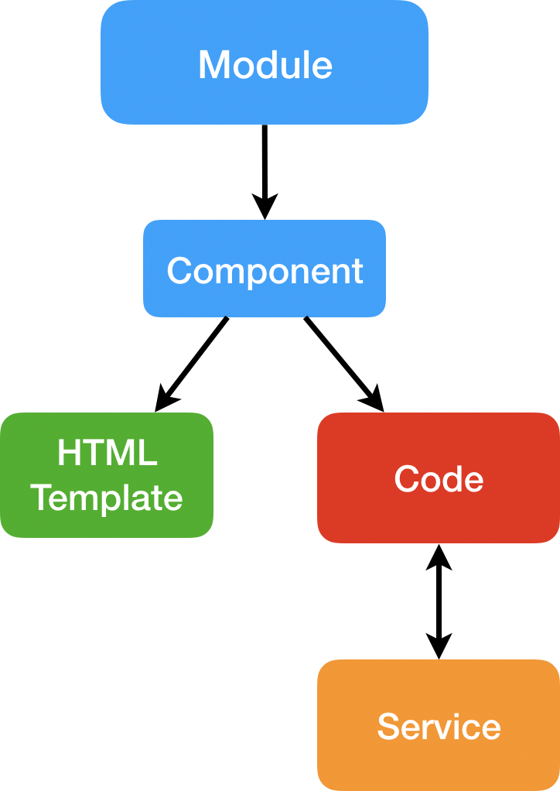
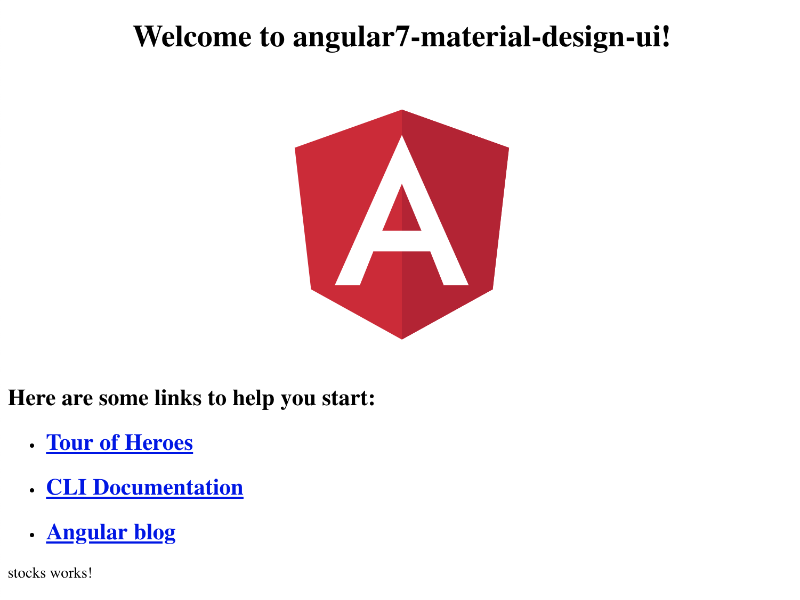
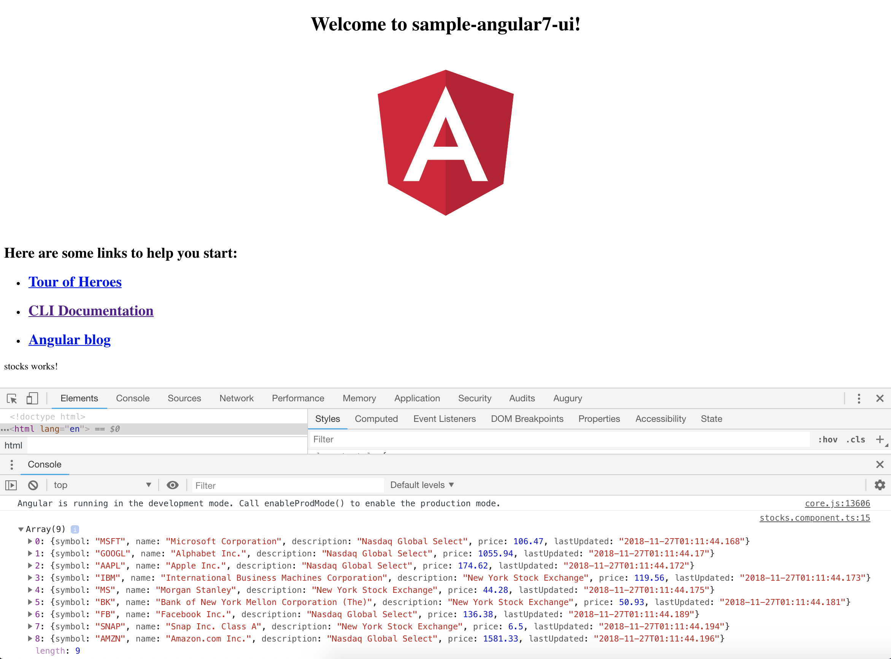
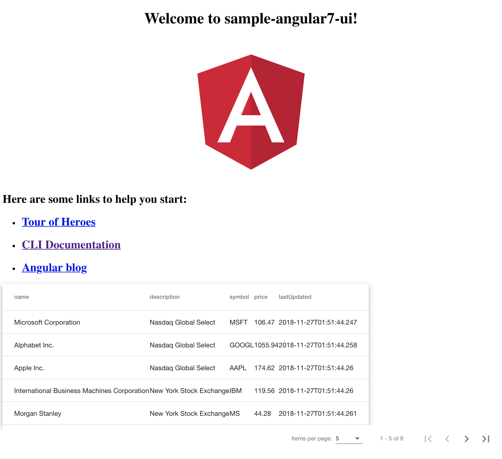
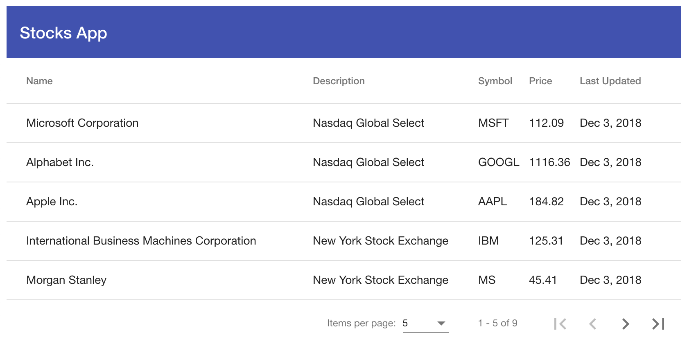

We will be creating a new Angular CLI application. But before we begin, double check you have installed compatible versions of the tools mentioned in the previous step.
$ nvm --version
0.33.11
$ node --version
v10.13.0
$ npm --version
6.4.1
$ ng --version
_ _ ____ _ ___
/ \ _ __ __ _ _ _| | __ _ _ __ / ___| | |_ _|
/ △ \ | '_ \ / _` | | | | |/ _` | '__| | | | | | |
/ ___ \| | | | (_| | |_| | | (_| | | | |___| |___ | |
/_/ \_\_| |_|\__, |\__,_|_|\__,_|_| \____|_____|___|
|___/
Angular CLI: 7.0.6
Node: 10.13.0
OS: darwin x64
Angular:
...
Package Version
------------------------------------------------------
@angular-devkit/architect 0.10.6
@angular-devkit/core 7.0.6
@angular-devkit/schematics 7.0.6
@schematics/angular 7.0.6
@schematics/update 0.10.6
rxjs 6.3.3
typescript 3.1.6
Create a new Angular CLI project and enable routing. The name of the project will be sample-angular7-ui and we will be using scss instead of css for our stylesheets.
$ ng new sample-angular7-ui --style scss
Here is the output of the command above:
? Would you like to add Angular routing? Yes
CREATE sample-angular7-ui/README.md (1033 bytes)
CREATE sample-angular7-ui/angular.json (3967 bytes)
CREATE sample-angular7-ui/package.json (1325 bytes)
CREATE sample-angular7-ui/tsconfig.json (408 bytes)
CREATE sample-angular7-ui/tslint.json (2837 bytes)
CREATE sample-angular7-ui/.editorconfig (246 bytes)
CREATE sample-angular7-ui/.gitignore (503 bytes)
CREATE sample-angular7-ui/src/favicon.ico (5430 bytes)
CREATE sample-angular7-ui/src/index.html (303 bytes)
CREATE sample-angular7-ui/src/main.ts (372 bytes)
CREATE sample-angular7-ui/src/polyfills.ts (3234 bytes)
CREATE sample-angular7-ui/src/test.ts (642 bytes)
CREATE sample-angular7-ui/src/styles.scss (80 bytes)
CREATE sample-angular7-ui/src/browserslist (388 bytes)
CREATE sample-angular7-ui/src/karma.conf.js (964 bytes)
CREATE sample-angular7-ui/src/tsconfig.app.json (166 bytes)
CREATE sample-angular7-ui/src/tsconfig.spec.json (256 bytes)
CREATE sample-angular7-ui/src/tslint.json (314 bytes)
CREATE sample-angular7-ui/src/assets/.gitkeep (0 bytes)
CREATE sample-angular7-ui/src/environments/environment.prod.ts (51 bytes)
CREATE sample-angular7-ui/src/environments/environment.ts (662 bytes)
CREATE sample-angular7-ui/src/app/app-routing.module.ts (245 bytes)
CREATE sample-angular7-ui/src/app/app.module.ts (393 bytes)
CREATE sample-angular7-ui/src/app/app.component.scss (0 bytes)
CREATE sample-angular7-ui/src/app/app.component.html (1173 bytes)
CREATE sample-angular7-ui/src/app/app.component.spec.ts (1131 bytes)
CREATE sample-angular7-ui/src/app/app.component.ts (223 bytes)
CREATE sample-angular7-ui/e2e/protractor.conf.js (752 bytes)
CREATE sample-angular7-ui/e2e/tsconfig.e2e.json (213 bytes)
CREATE sample-angular7-ui/e2e/src/app.e2e-spec.ts (310 bytes)
CREATE sample-angular7-ui/e2e/src/app.po.ts (204 bytes)
npm WARN deprecated circular-json@0.5.9: CircularJSON is in maintenance only, flatted is its successor.
> fsevents@1.2.4 install ~/Git/sample-angular7-ui/node_modules/fsevents
> node install
[fsevents] Success: "~/Git/sample-angular7-ui/node_modules/fsevents/lib/binding/Release/node-v64-darwin-x64/fse.node" already installed
Pass --update-binary to reinstall or --build-from-source to recompile
> node-sass@4.9.3 install ~/Git/sample-angular7-ui/node_modules/node-sass
> node scripts/install.js
Cached binary found at ~/.npm/node-sass/4.9.3/darwin-x64-64_binding.node
> node-sass@4.9.3 postinstall ~/Git/sample-angular7-ui/node_modules/node-sass
> node scripts/build.js
Binary found at ~/Git/sample-angular7-ui/node_modules/node-sass/vendor/darwin-x64-64/binding.node
Testing binary
Binary is fine
added 1162 packages from 1173 contributors and audited 39133 packages in 71.495s
found 0 vulnerabilities
Successfully initialized git.
Next, install all the dev dependenices needed for this app:
$ npm install
audited 39133 packages in 6.428s
found 0 vulnerabilities
Now open up a terminal session with either Git Bash (Windows) or Terminal (Mac OS) and startup your angular app!
$ ng serve
** Angular Live Development Server is listening on localhost:4200, open your browser on http://localhost:4200/ **
Date: 2018-11-25T16:58:50.553Z
Hash: ceb4379b5c9557dc3b98
Time: 6640ms
chunk {main} main.js, main.js.map (main) 12.7 kB [initial] [rendered]
chunk {polyfills} polyfills.js, polyfills.js.map (polyfills) 223 kB [initial] [rendered]
chunk {runtime} runtime.js, runtime.js.map (runtime) 6.08 kB [entry] [rendered]
chunk {styles} styles.js, styles.js.map (styles) 16.6 kB [initial] [rendered]
chunk {vendor} vendor.js, vendor.js.map (vendor) 3.54 MB [initial] [rendered]
ℹ ｢wdm｣: Compiled successfully.
Considering that this is typesript, we must define the type of data that we are going to subscribe to and display. We are expecting a top-level object with a Stock array inside of it. Here is a sample of the data:
{
"stocks": [
{
name: string;
description: string;
symbol: string;
price: number;
lastUpdated: string;
},
{ ... },
{ ... },
...
]
}
Let's start by creating model of the entire top-level object as well as the model for individual stock object.
This is what your current directory should look like.
|src
|---|app
|---|---|app-routing.module.ts
|---|---|app.component.html
|---|---|app.component.scss
|---|---|app.component.spec.ts
|---|---|app.component.ts
|---|---|app.module.ts
|---|assets
We will be adding two model classes (i.e. interfaces in Angular) underneath a models directory under the app folder. Angular has a few pre-built templates that you can use to help you during development. It provides you a simple command to help generate a model. Run the following command while you are in the /src/app directory:
$ ng generate interface models/stock
Output:
CREATE src/app/models/stock.ts (27 bytes)
Your directory should look like the following now:
|src
|---|app
|---|---|models
|---|---|---|stock.ts
|---|---|app-routing.module.ts
|---|---|app.component.html
|---|---|app.component.scss
|---|---|app.component.spec.ts
|---|---|app.component.ts
|---|---|app.module.ts
|---|assets
Now, go ahead and define the schmea for the stock object in the stock.ts file:
export interface Stock {
name: string;
description: string;
symbol: string;
price: number;
lastUpdated: string;
}
Once you have created the stock object, next define the entire top-level object response.
Let's stick with the same naming convention as we did while generating the API and call the overall object StocksResponse.
$ ng generate interface models/stocksResponse
The above command will generate a stocks-response.ts file, in which you will import the stock object and define the top-level object response as followed:
import { Stock } from './stock';
export interface StocksResponse {
stocks: Stock[];
}
✅Move on to the next step to create the service that will handle the data!
Once you have defined your object models, the next step is to setup a service to retrieve the data from your API.
Let's use the angular command to generate a service under the src/app directory once again.
$ ng generate service services/stock
Angular automatically creates a service class as well as a test-service class:
CREATE src/app/services/stock.service.spec.ts (328 bytes)
CREATE src/app/services/stock.service.ts (134 bytes)
Inside the stock.service.ts file, you should see the following:
import { Injectable } from '@angular/core';
@Injectable({
providedIn: 'root'
})
export class StockService {
constructor() { }
}
In order to retrieve the stocks, we will use the HttpClient module from @angular/common, which is a standard angular HTTP package along with the HttpHeaders module to call the backend stocks API. We will also require the StocksResponse schema to be imported.
Finally, we will also be implementing RxJS which is Reactive JavaScript programming. To really understand RxJS, take a look at the following resources:
import { Injectable } from '@angular/core';
import { HttpClient } from '@angular/common/http';
import { HttpHeaders } from '@angular/common/http';
import { StocksResponse } from '../models/stocks-response';
import { Observable } from 'rxjs';
@Injectable({
providedIn: 'root'
})
export class StockService {
constructor() { }
}
Now we will define the the path of the stocks API URL (stocksUrl) and setup a simple function to get the top-level object response. We will dive into the details on how to fully define the API URL a little later.
As for the getStocks function, we need to retrieve a response of type StocksResponse and pass in the proper HTTP headers into our GET request. Note how RxJS is implemented in the form of Observables.
We are passing in two headers:
Content-Type: This header tells the client what the content type of the returned content actually is.Accept: This request header advertises which content types, expressed as MIME types, the client is able to understand. Using content negotiation, the server then selects one of the proposals, uses it and informs the client of its choice with the Content-Type response header.export class StockService {
private stocksUrl = '/api/stocks';
constructor(private http: HttpClient) { }
getStocks(): Observable<StocksResponse> {
let headers = new HttpHeaders();
headers = headers.set('Content-Type', 'application/json; charset=utf-8');
headers = headers.append('Accept', 'application/json');
return this.http.get<StocksResponse>(this.stocksUrl, {headers: headers});
}
}
Continue to the next step to fully complete this step.
A Module is like a big container that contains one or many smaller containers such as Components, Services, Pipes.
A Component contains one of the following:
A Service is a reusable code that can be shared by Components.
A Pipe takes in data and transforms it to the desired output.

app.module.tsIn your angular application, you have an app.module.ts file. It looks like the following:
import { BrowserModule } from '@angular/platform-browser';
import { NgModule } from '@angular/core';
import { AppRoutingModule } from './app-routing.module';
import { AppComponent } from './app.component';
@NgModule({
declarations: [
AppComponent
],
imports: [
BrowserModule,
AppRoutingModule
],
providers: [],
bootstrap: [AppComponent]
})
export class AppModule { }
Let's breakdown what this file actually is used for.
Modules are a way to organize your code. They help control Dependency Injection. You can also load multiple modules at once and lazy load other modules.
You import modules into the imports section.
You declare components in the declarations section. Components used in the routing of a specific module, most be declared in said module. If components are used in another module, then you must only declare them in that other module.
You provide services in the providers section.
You can provide services at the Component level or at the Module level. If services are provided at the Module level, it creates an instance of the service to be shared across the entire module. However, if you provide a service at the Component leve, then a unique instance of it is available to that Component only.
Now let's modify our file by including the HttpClientModule and the StockService in the appropriate places.
import { BrowserModule } from '@angular/platform-browser';
import { NgModule } from '@angular/core';
import { HttpClientModule } from '@angular/common/http';
import { AppRoutingModule } from './app-routing.module';
import { AppComponent } from './app.component';
import { StockService } from './services/stock.service';
@NgModule({
declarations: [
AppComponent
],
imports: [
BrowserModule,
AppRoutingModule,
HttpClientModule
],
providers: [StockService],
bootstrap: [AppComponent]
})
export class AppModule { }
Now we need to build out component that will be displaying the stock data. For this step, we will create a Stock Component.
Run the following in the src/app directory:
$ ng generate component components/stocks
Output:
CREATE src/app/components/stocks/stocks.component.scss (0 bytes)
CREATE src/app/components/stocks/stocks.component.html (25 bytes)
CREATE src/app/components/stocks/stocks.component.spec.ts (628 bytes)
CREATE src/app/components/stocks/stocks.component.ts (270 bytes)
UPDATE src/app/app.module.ts (634 bytes)
Check your recently modified app.module.ts file, you should see that StocksComponent was automatically imported and added to declarations since we used the angular command to create the component.
Futhermore, you have a simple HTML template generated for you named stocks.component.html:
<p>
stocks works!
</p>
✅Now that we have a separate component for stocks, let's create the route to hit the stocks HTML page.
Angular sets up routing for you with the app-routing.module.ts file. The contents of this file is as follows:
import { NgModule } from '@angular/core';
import { Routes, RouterModule } from '@angular/router';
const routes: Routes = [];
@NgModule({
imports: [RouterModule.forRoot(routes)],
exports: [RouterModule]
})
export class AppRoutingModule { }
We are going to define two routes:
//stocksTo do so, import the components that you want to route the paths to:
import { StocksComponent } from './components/stocks/stocks.component';
import { AppComponent } from './app.component';
Then define the paths in the Routes array in the following manner:
const routes: Routes = [
{
path: '',
component: AppComponent,
pathMatch: 'full'
},
{
path: 'stocks',
component: StocksComponent
}
];
Once you save the project, go to http://localhost:4200/stocks, you should see stocks works! at the bottom of the page.

The reason that you can see the HTML page on the bottom of the generic Angular app is due to the <router-outlet></router-outlet> tag at the bottom of the app.component.html which will render the output of each specific route's component. Anything outside the router-outlet tag on the main component HTML page will get rendered on every route.
In order to get the stock data, we will utilize the stocks service in the stocks component. Currently the StocksComponent class looks like this:
import { Component, OnInit } from '@angular/core';
@Component({
selector: 'app-stocks',
templateUrl: './stocks.component.html',
styleUrls: ['./stocks.component.scss']
})
export class StocksComponent implements OnInit {
constructor() { }
ngOnInit() {
}
}
Simply import the StockService at the top, initialize a private instance of it inside the constructor, and then call the service inside the ngOnInit() function so that the data refreshes every time the screen reloads. For the time being, the getStocks function will be getting the data and printing it out to the console. As a reminder, when you use the dot operator on the data response object (i.e. data.stocks), you are returning the stocks array inside the top level object of type StocksResponse.
Your StocksComponent should look like the following:
import { Component, OnInit } from '@angular/core';
import { StockService } from '../../services/stock.service';
@Component({
selector: 'app-stocks',
templateUrl: './stocks.component.html',
styleUrls: ['./stocks.component.scss']
})
export class StocksComponent implements OnInit {
constructor(private stockService: StockService) { }
ngOnInit() {
this.stockService.getStocks().subscribe(data => {
console.log(data.stocks);
})
}
}
✅Now move onto the next step to find out how to retrieve the data!
Remember how we defined the stocksUrl as /api/stocks in the StockService, well now we will connect the pieces to show you how the request from your frontend is routed to your backend. Your API is running at http://localhost:8080/api/v1/stocks. Your frontend needs to make a request to that endpoint, however, in your codebase you do not want to hard-code a URL that will change depending on where you will run your backend in the future, whether that be on a server or a different port, etc. So to test locally, we setup a proxy.conf.json file at the root of the project, to proxy to our backend.
proxy.conf.jsonThis type of file is commonly used and can be found here: Rewriting the URL Path
{
"/api": {
"target": "http://localhost:8080/api/v1",
"secure": false,
"pathRewrite": {
"^/api": ""
}
}
}
As you can see, this is just a rewrite, indicating that everytime /api is mentioned as an HTTP path, replace that with http://localhost:8080/api/v1 and then append everything after /api to the end of the rewrite.
Go ahead and kill your current angular CLI session run the following command to serve up the frontend again:
$ ng serve --proxy-config proxy.conf.json
If you go back to http://localhost:4200/stocks, right-click Inspect, and check the Console tab, you should see the stocks array.

Now that we have ensured that data is coming through to the UI, we will use the table component from an Angular UI Framework known as Angular Material. First, let's install Angular Material.
Follow the steps here: Getting Started (use version 7.1.0)
Run the following in the root directory:
$ npm install --save @angular/material @angular/cdk @angular/animations
+ @angular/animations@7.0.4
+ @angular/cdk@7.1.0
+ @angular/material@7.1.0
added 3 packages from 1 contributor, updated 1 package and audited 39138 packages in 11.8s
found 0 vulnerabilities
Then add the module as discussed earler to app.module.ts:
...
import { BrowserAnimationsModule } from '@angular/platform-browser/animations';
...
imports: [
...
BrowserAnimationsModule
],
...
export class AppModule { }
Include one of Angular Material's prebuilt themes to your global styles.css file:
@import "~@angular/material/prebuilt-themes/indigo-pink.css";
To handle gesture support for certain components, install the following at the root directory:
$ npm install --save hammerjs
Finally, in the main.ts file, import HammerJS at the top:
import 'hammerjs';
Once Angular Material has been setup, let's utilize the Table Component with Pagination.
Let's use the example given in the docs and modify it to our needs. Just as a note, the sample is using static data to render the table.
stocks.component.tsimport { Component, OnInit, ViewChild } from '@angular/core';
import { StockService } from '../../services/stock.service';
import { MatTableDataSource, MatPaginator } from '@angular/material';
@Component({
selector: 'app-stocks',
templateUrl: './stocks.component.html',
styleUrls: ['./stocks.component.scss']
})
export class StocksComponent implements OnInit {
displayedColumns: string[] = ['name', 'description', 'symbol', 'price', 'lastUpdated'];
dataSource = new MatTableDataSource();
constructor(private stockService: StockService) { }
@ViewChild(MatPaginator) paginator: MatPaginator;
ngOnInit() {
this.stockService.getStocks().subscribe(data => {
this.dataSource.data = data.stocks;
this.dataSource.paginator = this.paginator
})
}
}
You will be using the MatTableDataSource and MatPaginator modules. Make sure you import this in your app.module.ts file by doing the following:
import { MatTableModule, MatPaginatorModule } from '@angular/material';
...
imports: [
...
MatTableModule,
MatPaginatorModule
],
...
export class AppModule { }
stocks.component.htmlReference the docs once again to see how to display the data:
<table mat-table [dataSource]="dataSource" class="mat-elevation-z8">
<!-- Name Column -->
<ng-container matColumnDef="name">
<th mat-header-cell *matHeaderCellDef> Name </th>
<td mat-cell *matCellDef="let stock"> {{stock.name}} </td>
</ng-container>
<!-- Description Column -->
<ng-container matColumnDef="description">
<th mat-header-cell *matHeaderCellDef> Description </th>
<td mat-cell *matCellDef="let stock"> {{stock.description}} </td>
</ng-container>
<!-- Symbol Column -->
<ng-container matColumnDef="symbol">
<th mat-header-cell *matHeaderCellDef> Symbol </th>
<td mat-cell *matCellDef="let stock"> {{stock.symbol}} </td>
</ng-container>
<!-- Price Column -->
<ng-container matColumnDef="price">
<th mat-header-cell *matHeaderCellDef> Price </th>
<td mat-cell *matCellDef="let stock"> {{stock.price}} </td>
</ng-container>
<!-- Last Updated Column -->
<ng-container matColumnDef="lastUpdated">
<th mat-header-cell *matHeaderCellDef> Last Updated </th>
<td mat-cell *matCellDef="let stock"> {{stock.lastUpdated}} </td>
</ng-container>
<tr mat-header-row *matHeaderRowDef="displayedColumns"></tr>
<tr mat-row *matRowDef="let row; columns: displayedColumns;"></tr>
</table>
<mat-paginator [pageSizeOptions]="[5, 10, 20]" showFirstLastButtons></mat-paginator>
You should now be able to see the following page at the /stocks endpoint:

Bootstrap is the world's most popular front-end component library. We are not going to implement much of Boostrap, other than use its container class to help style the UI, however, you can check out the components on their webpage and try them out.
In the root directory run to install version 4.1 of Bootstrap:
$ npm install --save bootstrap
Now configure angular.json to include the minified stylesheet file under the styles array:
"styles": [
"node_modules/bootstrap/dist/css/bootstrap.min.css",
"styles.scss"
]
Lastly, import the following minified stylesheet in your style.scss:
@import '~bootstrap/dist/css/bootstrap.min.css';
Let's start by cleaning up the app.component.html. Remove all the generic content that came along with the scaffolded project and replace it with a Basic Toolbar from Angular Material. This is the new HTML file:
<div class="container-fluid">
<mat-toolbar color="primary">Stocks App</mat-toolbar>
<router-outlet></router-outlet>
</div>
Make sure to add the MatToolbarModule to the app.module.ts file as well:
import { MatTableModule, MatPaginatorModule, MatToolbarModule } from '@angular/material';
...
imports: [
...
MatToolbarModule
],
...
export class AppModule { }
In the stocks.component.scss file, add the following to increase the width of the table:
table {
width: 100%;
}
Remove the mat-elevation-z8 class from table in stocks.component.html so that we remove the 3D effect of the table.
Finally, let's make the lastUpdated date attribute much more readable on our table component. To do so, let's use an angular Pipe.
...
<!-- Last Updated Column -->
<ng-container matColumnDef="lastUpdated">
<th mat-header-cell *matHeaderCellDef> Last Updated </th>
<td mat-cell *matCellDef="let stock"> {{stock.lastUpdated | date}} </td>
</ng-container>
...
Once your application reloads, you should have the following application:

🎊🎉 You're all done!!!